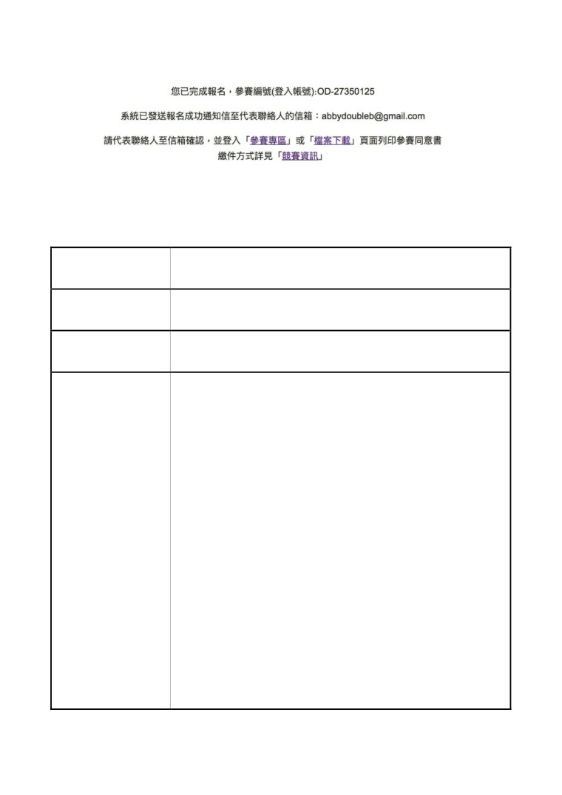
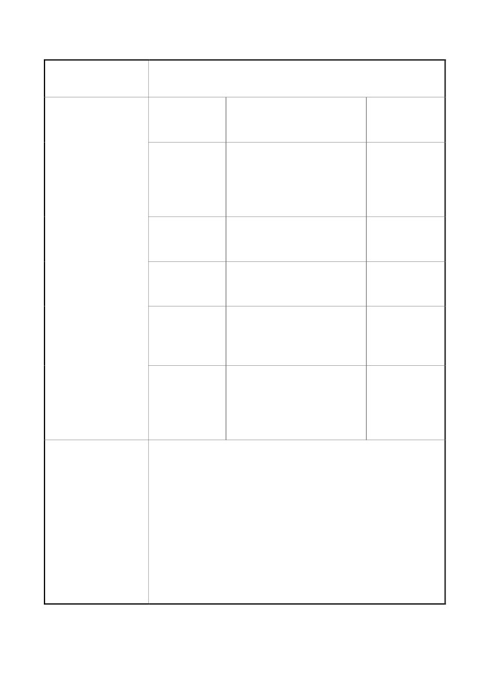
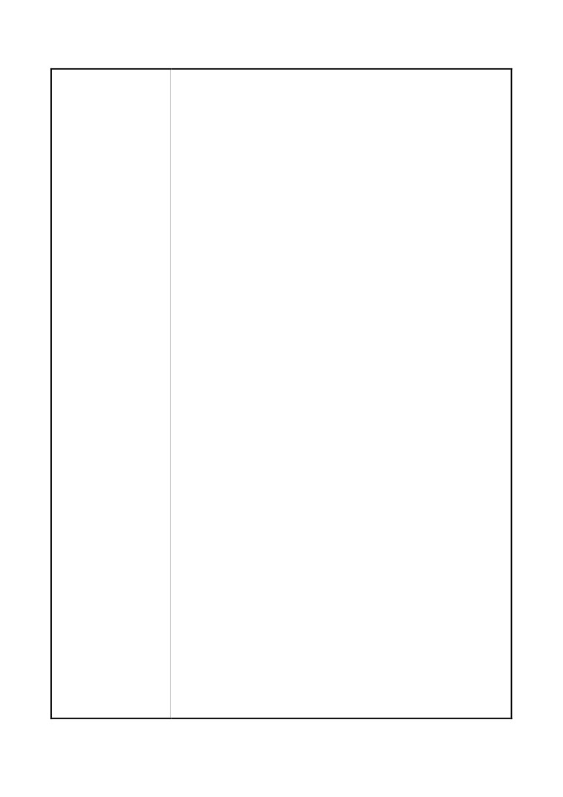
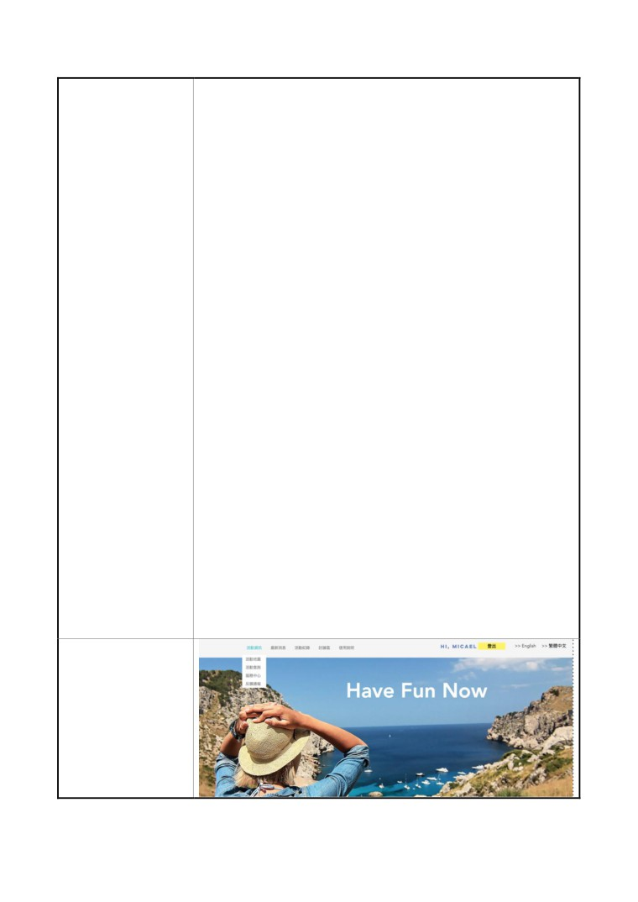

2018 資料創新應Ҕ競賽
產品或服務構想書
參 賽 編 號
OD-27350125
產品或服務名ᆀ
踏晴
市場(٬Ҕ)族群
想找各種類型活動資訊的٬Ҕ者
ӧВ常生活ύ是否常發生想出去玩卻不知ၰ要去哪ǻ
覺得網路上找資料過於分散、不確定興趣適ӝ什麼活動ǻ
得知活動情報卻早已過期ǻ讓「踏晴」您細細品味世界
各地的精彩活動。本系統有三大特點：
1.
精彩活動即ਔ查詢：提供٬Ҕ者最新即ਔ各種類型活
動動態，讓٬Ҕ者能隨ਔ隨地查詢各地活動資訊，輕
產品或服務簡介
鬆瀏覽新鮮事。
2.
個Γ活動小秘書：提供個Γ活動整ӝ行事ᆅ理，結
ӝ行事小秘書貼心提醒ф能，ӆ也不Ҕ擔心忘記任
何安排好的活動。
3.
天氣即ਔ預報：٬Ҕ者不ӆ需要一邊看新聞一邊安排
旅程，透過此系統，我們以最新政府開放資料分析預
測目的地天氣，不Ҕӆ煩惱天氣是晴是雨，快ೲ安排
1

旅行很輕鬆。
資料集提供
資料集名ᆀ
資料集連結
機關名ᆀ
交通部觀光
rtdata.tw/MOTC/
觀光活動資料
v2/Tourism/Acti
局
vity?$top=30&$f
ormat=xml
文化部
親子活動
w/dataset/6014#r
資
料
ٰ
源
1
(請詳列)
文化部
綜藝活動
w/dataset/6009#r
1
交通部氣象
一般天氣預報-一週縣市天
wb.gov.tw/datad
局
氣預報
ownload?dataid=
F-C0032-005
交通部氣象
一般天氣預報-七天天氣預
.cwb.gov.tw/d
atadownload?d
局
ataid=F-C003
2-003
壹、 起與創作目的
隨著社會文化水準的提升，Γ們參與各種綜藝、藝文
產品或服務說明
活動的意ᜫ越ٰ越高。大大小小的活動不斷推出，Γ們透
過參與各類型的藝文活動ٰ擴展文化的視野以及提升生
活品質，因此，無論地方政府或是民間組織也漸漸透過贊
2

助各種藝文綜藝活動ٰ提升社會大眾心ύ的形象，綜藝藝
文產業的經濟利益已不ё小覷。另一方面，參與活動的民
眾，對於天氣狀況極為ӧ意，民眾會想知ၰ，ӧ這個ਔ間
點過去天氣是否良好，會不會突ฅΠ起一陣大雨而導致塞
車或是活動取消。透過本系統便能簡單又迅ೲ地解決這個
問題。
ӧ對市場上有的系統進行廣泛的分析與調查後，我
們的團隊決定解決上述問題，開發一個活動分享平台，結
ӝ政府所提供的開放資料，讓٬Ҕ者能夠迅ೲ的依據ਔ
間、興趣找尋相關的活動，ӆ結ӝ天氣預報ф能，讓٬Ҕ
者能透過一個平台便能規劃出最佳、最符ӝ需求的旅遊行
程。
本系統ё說是結ӝ了天氣預報與活動資訊查詢的完美
契ӝ，滿足了代Γ對於藝文活動的需求，也滿足了٬Ҕ
者想了解天氣狀況，卻得ӧ不同系統上搜尋資料、自行整
ӝ，這樣的結ӝ與創新是市面上所沒有的，相信這樣多ф
能的計也٬ӧ同類的系統ύ能獲得更高的٬Ҕ率。
ມ、市場調查與定位
3
ӧ這二十一世紀，愈ٰ愈多的民眾會透過參與各類型
的藝文活動ٰ擴展視野、提升生活品質。ฅ而網路資訊過
於發達٬得資訊過於分散，不方便ᆫ焦、尋找想要的資訊。
我們對市面上有的活動平台進行調查，以ф能面大致ё
分為以Π三類：
一、遊憩景點查詢：提供戶外踏青各景點的地址、
照片以及聯絡方式等相關資訊，例如：台北一遊҂盡、城
市通 。
二、遊客ϸ饋：提供民眾分享到各景點的遊樂心得，
例如：TripAdvisor。
三、主題活動資訊：以提供特定主題活動售票資訊
為導向的活動資訊平台，例如： KKTIX、華山 1914 文化
創意產業園區。
雖ฅ目前市面上已有許多網站提供活動資訊，ф能
卻仍不夠完善。本團隊以快ೲ搜尋、輕鬆規劃為開發概
念，將各地精彩活動查詢、天氣預報以及行事小秘書等
ф能結ӝ，讓٬Ҕ者不僅能透過此系統輕鬆查詢活動資
訊，還能獲得最新即ਔ天氣預報、ᆅ理個Γ活動行事，
4
讓民眾能將各種活動輕鬆融入В常生活。
參、٬Ҕ對象
無論是藝文活動的ང好者，或是Π課Π班後想找地方
休憩，想找個地方為心靈充電的民眾，都能透過此系統，
快ೲ瀏覽各地精彩活動資訊。對於網路上資訊過於分散，
覺得不知從何搜尋、老是遇到得知情報卻已過期很苦惱的
٬Ҕ者都能透過此系統輕鬆一Ћ掌ඝ最新資訊不漏接。
肆、產品或服務特色說明
本系統整ӝ各地精彩活動並透過政府開放資料之數據
分析提供最新天氣預報，讓գ隨ਔ隨地都能根據自己的興
趣，規劃屬於自己的旅程，而不Ҕ一邊查天氣預報一邊規
劃多個旅行備案。除了輕鬆規劃個Γ旅程以外，本系統的
行事小秘書提供您貼心的活動行程提醒ф能，讓您輕鬆
ᆅ理活動行事。
伍、產品或服務ф能(請條列之)
1. 整ӝ各地精彩活動
2. 最近即ਔ天氣預報
5

3. 即ਔ分享活動資訊
4. 分享最新活動免費票券
5. 個Γ活動行事規劃
陸、҂ٰ規劃(如ф能擴充等)
系統ᆅ理員ҭ能夠透過雲端資料庫進行大數據分析，
進行各地區、景點的熱門瀏覽統計分析、各地區、年齡之
٬Ҕ者旅程偏好之統計，҂ٰ期望透過結ӝ大數據分析系
統之結構與ߚ結構化資料，提供個Γ化旅程小秘書提供最
適ӝ不同٬Ҕ者的旅程推薦方案。
增加結ӝ運、公車、公共自行車的路線規劃ф能，
更加善Ҕ公共交通施，協助觀光客更能夠妥善٬Ҕ這٤
施，並且有更好的工具改善交通部熟悉的問題，ࡽ能節
省相關的ਔ間浪費，也能省去搭計程車的費Ҕ。
產 品 或 服 務
雛 型 計 კ
6